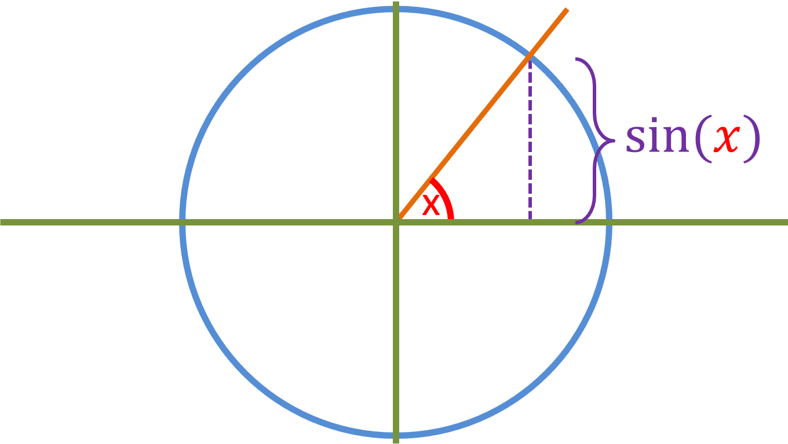
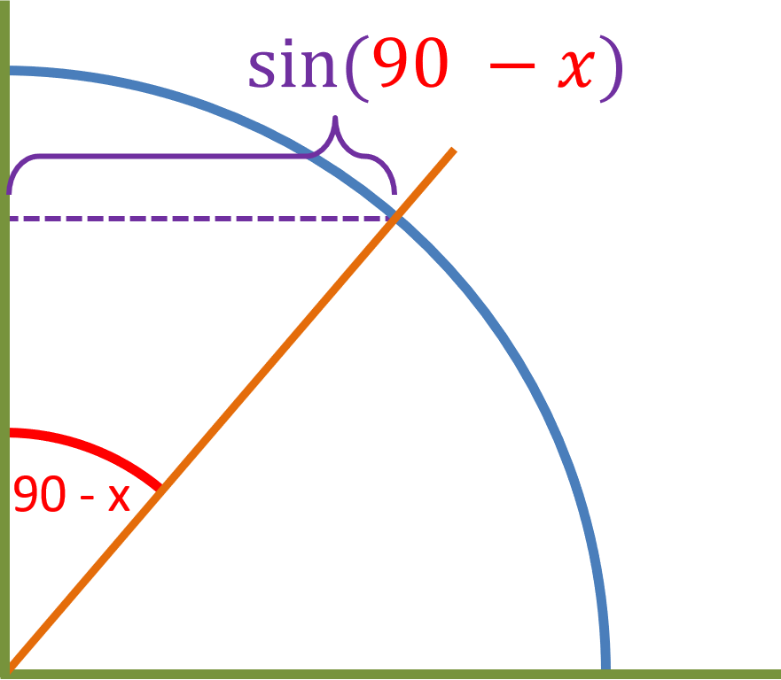
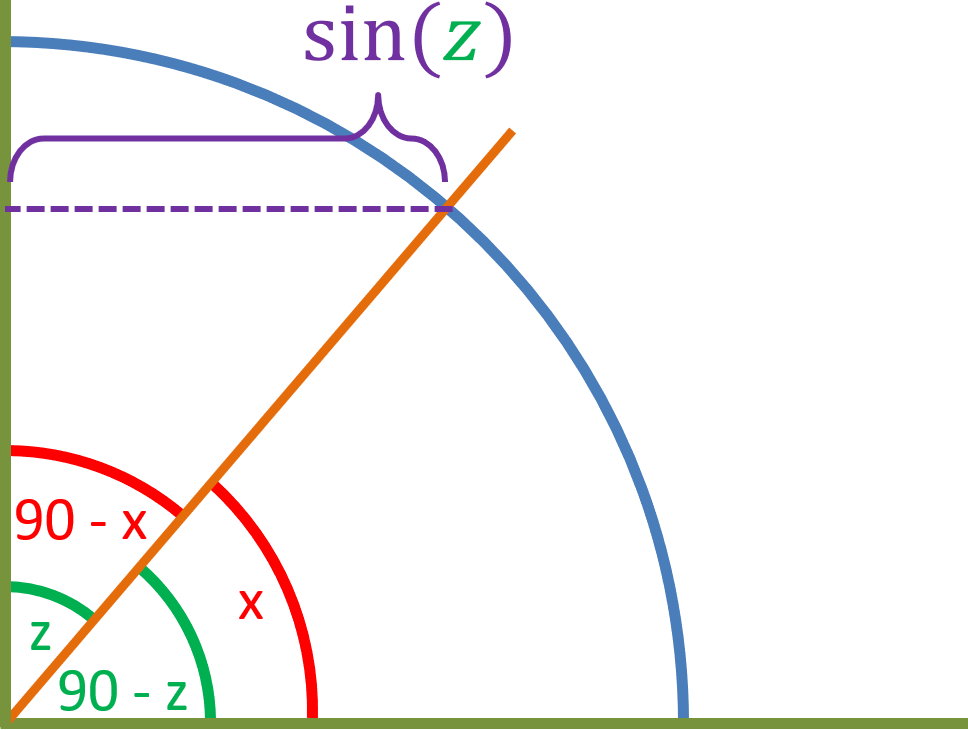

Lets go back to how sin(x) is defined in a unit circle:
Since sin(x) is the line opposite to x, then sin(90 - x) would be:
But that line is also defined as cos(x). That means [cos(x) = sin(90 - x)]. Now let [90 - x] be equal to z:
We know that the line which is sin(z) is also cos(90 - z). Therefore [sin(z) = cos(90 - z)].